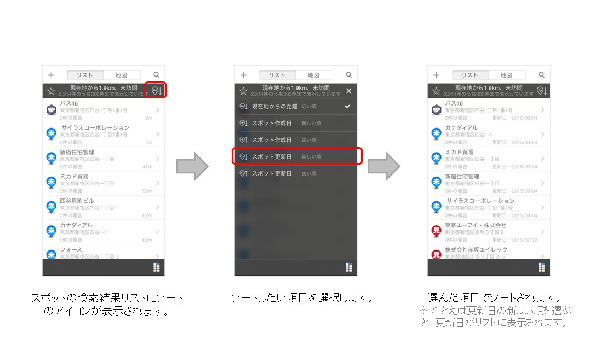

iOS¶
ver.3.5.6 (2015/12/21）¶
主な変更点¶
- スポット
- スポット作成でデフォルトのタグがセットされるようになりました。
- 報告書
- 報告書作成または編集でコードをスキャンした時のサウンドを変更しました。
- 全般
- 安定性の向上および、一部の不具合を修正しました。
改善¶
- 予定
- 予定詳細で連携した予定の場合にデザインが正しく表示されない場合がある不具合を修正しました。
- 予定編集で顧客担当者のデザインが正しく表示されない不具合を修正しました。
- お知らせ
- 再ログイン時に既読のお知らせが未読扱いにならないように修正しました。
ver.3.5.4 (2015/10/16）¶
主な変更点¶
全般
- グループ管理者の権限設定の見直しに伴い、グループ管理者は権限（グループ権限、スポット権限、予定権限）の変更ができないようになりました。
- 安定性の向上および、一部の不具合を修正しました。
- 報告書
- 報告書作成または編集で戻るボタンを押した時に、変更内容が存在する場合は確認のアラートを表示するように変更しました。
改善¶
- 全般
- カメラのアクセス設定が許可されていない場合にカメラを起動しないように修正しました。
- フォトロールに写真を保存する場合にExif情報が正しくない不具合を修正しました。
- ホーム
- iOS9でホームのデザインが正しく表示されない場合がある不具合を修正しました。
ver.3.5.2 (2015/9/18）¶
主な変更点¶
スポット
- スポットでリストがソートできるようになりました。
絞込んだ結果(最大300件)の中でソートができるようになりました。
ソートできる項目はスポット作成日、スポット更新日、現在地からの距離です。
一部のデザインおよび、文言を変更しました。
安定性の向上および、一部の不具合を修正しました。
改善¶
- お知らせ
- App起動時にお知らせの未読件数が更新されない不具合を修正しました。
ver.3.5.1 (2015/08/12）¶
主な変更点¶
- 安定性の向上および、一部の不具合を修正しました。
改善¶
- iOS8で報告書の作成・編集時の写真項目が、設定によらずフォトライブラリから選択できてしまう不具合を修正しました。
ver.3.5.0 (2015/08/02）¶
主な変更点¶
スポットと報告書の検索機能が強化されました。
- スポット
- ホームおよび、スポットの地図でスポットピンの表示処理を高速化しました。
- ホームおよび、スポットの地図で スクロール操作による自動再検索 のタイミングを調整しました。
- スポットの検索条件が保存できるようになりました。
- スポットの検索条件に作成日、更新日を追加しました。
- スポットの検索条件で前回訪問日の項目に経過日数、経過月数、日付指定を追加しました。
- スポットの詳細で地図を拡大表示して操作できるようになりました。
- スポットのリストと地図で検索位置を共有するように変更しました。
- スポットで地図を自動で縮尺する条件を初回表示時、リスト表示時、キーワードで検索した場合のみに変更しました。
- 報告書閲覧
- 報告閲覧の検索条件が保存できるようになりました。
- 報告閲覧の検索条件で日付の項目に今週、今月を追加しました。
- 報告閲覧でチェックインした報告書の場合はスポット名を表示するようになりました。
- 報告閲覧で簡易報告と報告書の検索件数を表示するようになりました。
- ホーム
- ホームおよび、予定で地図を自動で縮尺する場合に終了していない予定のみ表示するように変更しました。
- ホームでスポットを表示する場合にスポットと同様に最大300件まで表示できるようになりました。
- ホームで地図を自動で縮尺する条件を予定を表示している場合のみに変更しました。
改善¶
iOS8および64bitに対応しました。
- 全般
- 一部のデザインおよび、文言を変更しました。
- 安定性の向上および、一部の不具合を修正しました。
- 詳細
- iOS8.3以降でスライダーのデザインが正しくない不具合を修正しました。
- スポットの地図で通信環境が良くない場合に表示中のスポットピンがクリアされる場合がある不具合を修正しました。
- スポットの位置情報に誤差が生じる不具合を修正しました。
- スポットで検索距離の表示形式が正しくない場合がある不具合を修正しました。
- 予定で日付を切り替えた時に自動で更新しない場合がある不具合を修正しました。
- 報告閲覧で検索条件の報告書名の並び順が正しくない不具合を修正しました。
- 安全走行支援 で危険挙動を不要に検知してしまう場合がある不具合を修正しました。
ver.3.4.7 (2015/06/12）¶
ver.3.4.6 (2015/05/30）¶
ver.3.4.5 (2015/03/31）¶
主な変更点¶
- ルート自動記録 の契約をせずに交通費自動計算の契約のみの場合でも交通費自動計算ができるようになりました。
- ルート自動記録 と交通費自動計算の両方を契約している場合に、それぞれオンオフの設定ができるようになりました。
- 報告書の作成・編集で日付選択フィールドの入力した日付をクリアできるようになりました。
- 報告書の作成・編集で時間選択フィールドの入力した時間をクリアできるようになりました。
- 報告書の作成で時間選択フィールドのデフォルト値として現在時刻をセットできるようになりました。
- プッシュ通知を受信した場合に、強制的にホームに遷移しないように変更しました。
- 設定の一般項目の名称を基本設定に変更しました。
- 利用規約のリンクにアンダーラインを追加しました。
- 安定性の向上および、一部の不具合を修正しました。
改善¶
- 安全走行支援 の長時間運転警告が正しく動作しない場合がある不具合を修正しました。
- 安全走行支援 で連続で警告音が再生できない場合がある不具合を修正しました。
- ログアウト時に 安全走行支援 のデータが全て送信されない場合がある不具合を修正しました。
- スポットの編集でコメントの文字数が制限を超えていた場合に文字を削除できない場合がある不具合を修正しました。
- スポットの検索でiPadの場合に自社担当者の項目のデザインが正しくない場合がある不具合を修正しました。
- 報告書の作成で日付選択フィールドのデフォルト値として現在日付がセットされない場合がある不具合を修正しました。
- 報告書の作成・編集で日付選択フィールドのカレンダーの閉じるボタンで入力した日付がクリアされる場合がある不具合を修正しました。
- 報告書の作成・編集・詳細で時間選択フィールドが未入力の場合に00:00で表示する場合がある不具合を修正しました。
- 報告書の作成でスポットフィールドのチェックインしたスポットを未選択にした場合に、編集で再度チェックインしたスポットをセットする場合がある不具合を修正しました。
ver.3.4.4 (2015/03/08）¶
主な変更点¶
- 安全走行支援 機能を追加しました。
- ホームで移動線を表示する場合に、履歴画面で設定しているルート自動記録のGPS誤差表示を適用するようになりました。
- スポットで総件数が表示されるようになりました。
- スポットの詳細でオフラインの場合でも報告書が記入できるようになりました。
- 安定性の向上および、一部の不具合を修正しました。
改善¶
- 報告書から顧客担当者を作成する権限が正しくない場合がある不具合を修正しました。
- 報告閲覧の検索で報告書の選択肢が正しくない場合がある不具合を修正しました。
ver.3.4.3 (2015/02/25）¶
主な変更点¶
- スポットの詳細から報告書が記入できるようになりました。（チェックイン可能な場所であればチェックインも併せてできます。）
- 顧客担当者に備考を追加しました。
- ホームでスポットを表示している場合にホームの表示設定をチェックインのデフォルトの検索条件として適用するようになりました。（自社担当者とスポットタグの設定が適用されます。）
- 一定時間後にAppを開いた時、ホーム画面を表示するかどうか、選択できるようになりました。
- スポットのコメントの文字制限を3000文字までに変更しました。
- 安定性の向上および、一部の不具合を修正しました。
改善¶
- 顧客担当者の電話番号とメールのラベルのピッカーが空白行を選択する場合がある不具合を修正しました。
- スポットの地図のピンをタップして経路検索のアイコンを押しても経路検索ができない不具合を修正しました。
- 顧客担当者の詳細にスポット名が表示されていない場合がある不具合を修正しました。
- 顧客担当者を編集後に編集前の情報が表示されている場合がある不具合を修正しました。
- 報告閲覧のカレンダーの日付が選択できない場合がある不具合を修正しました。
ver.3.4.2 (2015/01/23）¶
主な変更点¶
- スポットのリストと地図でスポットが最大300件、まとめて表示できるようになりました。（300件目以降のスポットは地図の中心を移動させて検索地点を変更するか、検索条件を指定して絞り込むことで表示できます。）
- スポットの地図でスクロールすると、スポットを再検索するようになりました。
- スポットの検索で「スポット名」、「カナ」、「スポットコード」、「所在地」、「電話番号」、「コメント」から検索できるようになりました。
- スポットの地図で所在地またはランドマークを検索して、地図の中心を移動できるようになりました。
- スポットに「スポットコード」「スポット名(カナ)」が入力できるようになりました。（カナは以前より表示のみされていましたが、今回より登録、編集ができるようになりました。）
- スポット詳細で詳細情報が初めから表示されるようになりました。
- スポット詳細の項目名をアイコンに変更しました。
- 顧客担当者にカナ、勤務先の電話番号・メール、携帯の電話番号・メール、個人携帯の電話番号・メール、自宅の電話番号・メールを追加しました。
- スポットの権限に「編集」と「削除」を追加しました。（今回より一般ユーザーのスポットの作成、編集、削除が個別の権限で設定できますが、以前のバージョンは作成権限のみでの判断になります。）
改善¶
- 報告書編集でスポットが必須の場合にスポットを未選択状態でも送信できる不具合を修正しました。
- 報告書編集でスポットを選択状態で、スポットの選択一覧に遷移して操作せずに戻るとスポットの選択が解除される不具合を修正しました。
- 報告閲覧で後で読むを表示した場合に、読み込みに成功してもに読み込みに失敗しましたと表示される場合がある不具合を修正しました。
- 報告閲覧およびアカウント切り替えの日付に昨日と表示される場合に、表示が正しくない場合がある不具合を修正しました。
- スポットの登記日のタイムゾーンが正しくない不具合を修正しました。
- 顧客担当者詳細で登録情報が長い場合に、全て表示されない不具合を修正しました。
- 報告閲覧でカレンダーの日付がNULLと表示される場合がある不具合を修正しました。
ver.3.4.1 (2014/12/05）¶
主な変更点¶
- 報告閲覧機能を追加しました。
- スポット作成（編集）時に所在地が番地まで取得できるようになりました。
場所によっては取得できないケースもあります
- スポット作成（編集）時に自動で郵便番号が補完されるようになりました。
場所によっては取得できないケースもあります
- スポット作成（編集）時に郵便番号・所在地から自動で位置を補正できるようになりました。（手動で位置を変更した場合は補正されません）
- アカウント情報変更時のセキュリティを強化しました。
アカウント情報を変更する場合はパスワード入力が必須になります
- アカウント作成またはパスワード変更時に新しいパスワードの再入力を必須としました。
- メンバー画面および履歴画面のGPS誤差の表示制限の初期設定を1000mに変更しました。
- 安定性の向上および、一部の不具合を修正しました。
ver.3.4.0 (2014/10/28）¶
改善¶
- iOS8でスポット顧客担当者削除後、予定削除後、報告書経由でスポット作成後の画面遷移時にクラッシュする問題を修正しました。
- iOS8でフォトライブラリから選択する際のデザインを調整しました。
- iPhone6、iPhone6Plusでのレイアウトの不具合を修正しました。
- マルチアカウント 機能使用時に、現在選択しているグループ以外の最終履歴が表示されない不具合を修正しました。
- GoogleMaps利用時にメンバー画面で自動縮尺が機能していない不具合を修正しました。
- 報告書詳細で写真項目が連続する場合に読み込みができない場合がある不具合を修正しました。
- 未報告一覧から報告書を作成する場合でオフラインの場合に自動送信ができない場合がある不具合を修正しました。
- iPadで報告書作成時にスポット選択画面で20件目以降が読み込めない不具合を修正しました。
- スポット作成時に住所を未入力で登録できてしまう不具合を修正しました。
- スポット詳細でURL項目に”&”が入力できない不具合を修正しました。
- スポット詳細のApp内ブラウザで一部のURLが表示できない不具合を修正しました。
- 同期後に広告の表示、非表示が設定されない場合がある不具合を修正しました。
- スポット顧客担当者、予定担当者がソートされていない箇所を修正しました。
- 予定詳細の担当者を一般ユーザーでメンバー閲覧権限が無い場合でも参照できるように修正しました。
ver.3.3.1 (2014/09/01）¶
主な変更点¶
- マルチアカウント 機能のアカウント数を最大5件にしました。
- バージョンアップ可能な場合に確認のアラートが表示されるようになりました。
- 端末設定のAppのバックグラウンド更新の設定状況をサーバに送信するようにしました。（顧客管理以外では使用されません。）
- スポット編集権限の仕様を変更しました。（一般権限ユーザーでもスポット作成権限がある場合に、スポットの編集が可能になります。）
- 出勤前ステータス の仕様を変更しました。（ 出勤前ステータス は1回の打刻制限がありましたが、今回より無制限になります。）
- GoogleMapsの予定の線を点線に変更しました。（AppleMapとほぼ同じ表示になります。）
- GoogleMapsSDKを再新化し安定性を向上しました。
- 互換性をiOSを6.0以降に変更しました。
- 一部の画面のパフォーマンスをチューニングしました。
- 一部の不具合を修正しました。
改善¶
- 3.2.5以下のバージョンから3.3.0にアップデート後に一度も同期しない場合に、権限情報が正しくない場合がある不具合を修正しました。
- 3.2.1以下のバージョンからアップデート後に一度も同期しない場合に、行動種別の設定が効かない場合がある不具合を修正しました。
- 一部の通信エラーの処理が不足している箇所を修正しました。
- デバイストークン情報が変更された場合に設定が更新されない場合がある不具合を修正しました。
- 削除された ステータス が履歴に存在する場合に表示が正しくない不具合を修正しました。
- 旧UIの自動同期タイミングを新UIと同じタイミングで同期するように修正しました。（前回の同期から20時間経過すると自動で同期します。）
- 新規登録後に履歴が１件も無い場合に 出勤前ステータス が表示されない場合がある不具合を修正しました。
- メニュー画面遷移時にメモリ不足でクラッシュする場合がある不具合を修正しました。
- １ヶ月以上前の不要な履歴と予定データの一部が起動時に削除できていない場合がある不具合を修正しました。

バージョン情報
- iOS
- ver.3.5.6 (2015/12/21）
- ver.3.5.5 (2015/10/29）
- ver.3.5.4 (2015/10/16）
- ver.3.5.2 (2015/9/18）
- ver.3.5.1 (2015/08/12）
- ver.3.5.0 (2015/08/02）
- ver.3.4.7 (2015/06/12）
- ver.3.4.6 (2015/05/30）
- ver.3.4.5 (2015/03/31）
- ver.3.4.4 (2015/03/08）
- ver.3.4.3 (2015/02/25）
- ver.3.4.2 (2015/01/23）
- ver.3.4.1 (2014/12/05）
- ver.3.4.0 (2014/10/28）
- ver.3.3.1 (2014/09/01）